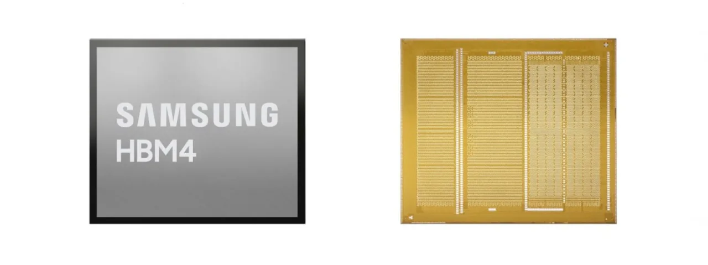

삼성전자 주주가 지금 가장 궁금해할 질문은 “HBM4를 납품하느냐” 하나로 끝나지 않습니다. 이미 2026년 1분기 실적에서 숫자는 크게 좋아졌습니다. 문제는 이 숫자가 일회성 업황 반등인지, 아니면 고부가 메모리와 파운드리 회복이 함께 만드는 구조적 이익인지입니다.
삼성전자는 2026년 1분기 연결 매출 133.9조원, 영업이익 57.2조원을 발표했습니다. 이 가운데 DS 부문은 매출 81.7조원, 영업이익 53.7조원을 기록했습니다. 전체 영업이익의 대부분이 반도체에서 나온 셈이므로 주가 판단도 스마트폰 판매량보다 메모리 제품 구성, HBM 고객 인증, 파운드리 가동률에 더 민감해졌습니다.
그래서 이 글은 삼성전자를 “메모리 가격이 오르는 회사”로만 보지 않습니다. 주주가 확인해야 할 것은 HBM4가 어느 고객의 플랫폼에 얼마나 안정적으로 들어가는지, 파운드리가 HBM4 베이스 다이와 선단 공정에서 비용 부담을 줄이는지, 그리고 좋아진 영업이익이 실제 현금흐름과 주주환원 여력으로 이어지는지입니다.
숫자가 좋아질수록 착시는 커집니다

2025년 삼성전자의 연간 매출은 333.6조원, 영업이익은 43.6조원이었습니다. 그런데 2026년 1분기 영업이익만 57.2조원입니다. 이 숫자는 분명 강합니다. 동시에 너무 빠르게 좋아진 숫자는 투자자에게 착시를 만들 수 있습니다. 한 분기 이익이 강할수록 다음 분기에 시장은 더 높은 지속성을 요구합니다.
핵심은 DS 부문 이익 집중도입니다. DS 영업이익 53.7조원은 전체 이익의 중심입니다. 스마트폰, 디스플레이, 가전, 하만이 모두 의미 있는 사업이지만 현재 주가를 밀어 올리는 힘은 반도체입니다. 이 구도에서는 범용 D램 가격이 조금만 흔들려도 기대가 빠르게 식을 수 있고, HBM 고객 확대가 늦어져도 “좋은 실적의 질”이 다시 의심받을 수 있습니다.
반대로 이익 집중도가 위험만 뜻하는 것은 아닙니다. AI 서버와 고성능 메모리 수요가 실제로 오래 이어지면 삼성전자는 메모리 생산 규모, 패키징 역량, 파운드리와의 결합 가능성을 동시에 보여줄 수 있습니다. 문제는 시장이 이미 좋아진 숫자를 보고 있다는 점입니다. 주가가 더 설득력을 얻으려면 다음 확인 항목은 매출 증가율이 아니라 고부가 제품 비중과 현금 전환 속도입니다.
HBM4는 고객 인증의 언어
관련 영상
삼성전자 반도체가 메모리로 AI 시장을 설명하는 공식 영상
HBM4는 일반 메모리처럼 가격과 출하량만으로 보기 어렵습니다. 고객의 GPU 플랫폼, 패키징 조건, 전력과 발열 요구, 공급 안정성까지 통과해야 실제 매출이 반복됩니다. 삼성전자는 2026년 1분기 발표에서 엔비디아 Vera Rubin 플랫폼용 HBM4와 SOCAMM2 양산 판매를 시작했다고 밝혔고, 2분기에는 HBM4E 샘플 공급을 통해 기술 리더십을 강화하겠다고 설명했습니다.
이 대목에서 주주가 봐야 할 것은 “세계 최초”라는 문구보다 고객 인증 이후의 반복 주문입니다. AI 반도체 고객은 제품을 한 번 테스트했다고 바로 물량을 크게 늘리지 않습니다. 수율, 발열, 패키징 안정성, 공급 일정이 여러 번 확인되어야 다음 세대 플랫폼에서 더 큰 비중을 줍니다. HBM4가 삼성전자의 이익을 바꾸려면 샘플, 인증, 초기 공급, 반복 공급의 순서가 끊기지 않아야 합니다.
관련종목을 함께 보면 구도가 더 선명해집니다. 엔비디아는 AI 가속기 플랫폼의 기준을 정하는 쪽이고, 마이크론과 SK하이닉스는 고부가 메모리 경쟁의 직접 비교 대상입니다. 삼성전자가 주가 재평가를 받으려면 단순히 HBM 시장에 참여하는 수준이 아니라, 엔비디아 같은 주요 고객의 차세대 플랫폼에서 SK하이닉스와 마이크론을 상대로 실제 점유율을 되찾는 장면이 필요합니다.
파운드리는 옵션이 아니라 비용표
삼성전자를 볼 때 파운드리는 자주 “언젠가 좋아질 옵션”처럼 다뤄집니다. 그러나 지금은 옵션보다 비용표에 가깝습니다. 선단 공정은 연구개발과 장비 투자가 크고, 고객 물량이 충분하지 않으면 손익이 무겁게 남습니다. 메모리가 아무리 좋아져도 파운드리 손익이 계속 흔들리면 삼성전자의 복합 기업 프리미엄은 제한될 수 있습니다.
2026년 1분기 발표에서 삼성전자는 파운드리 사업이 비수기 영향으로 실적이 감소했다고 설명했습니다. 다만 고성능컴퓨팅 중심의 디자인윈을 유지했고, HBM4 베이스 다이 공급 증가를 통해 선단 라인 가동률과 손익 개선을 노린다고 밝혔습니다. 이 말은 파운드리가 메모리와 완전히 따로 움직이는 사업이 아니라, HBM 패키지 안에서도 연결될 수 있다는 뜻입니다.
주주 입장에서 좋은 신호는 세 가지입니다. 첫째, HBM4 베이스 다이가 파운드리 가동률을 실제로 끌어올리는지입니다. 둘째, 2나노와 1.4나노 로드맵이 발표용 문구가 아니라 고객 수주와 양산 일정으로 연결되는지입니다. 셋째, 파운드리 손실이 메모리 이익을 갉아먹는 속도가 줄어드는지입니다. 이 세 가지가 함께 맞아야 삼성전자는 “메모리만 좋은 회사”에서 벗어날 수 있습니다.
주주가 볼 순서는 현금흐름입니다
삼성전자의 장점은 규모입니다. 메모리에서 강해지면 연구개발, 설비투자, 고객 대응을 동시에 밀어붙일 수 있습니다. 그러나 규모는 장점인 동시에 비용입니다. 2025년 삼성전자는 연간 연구개발 투자 37.7조원을 기록했습니다. AI 메모리, 파운드리, 모바일 AI, 디스플레이가 모두 경쟁 중이므로 높은 이익이 곧바로 남는 현금으로 바뀐다고 단정하기 어렵습니다.
따라서 삼성전자 글을 읽는 순서는 주가 뉴스보다 현금흐름표가 먼저입니다. 영업이익이 좋아졌다면 운전자본이 얼마나 묶였는지, 재고가 어떤 속도로 줄었는지, 설비투자가 어느 사업부로 배분됐는지, 잉여현금흐름이 배당과 자사주 기대를 뒷받침하는지 확인해야 합니다. 특히 HBM은 고부가 제품이지만 생산능력 전환과 패키징 투자가 필요하므로 이익률만 보고 판단하면 늦습니다.
삼성전자에 대한 결론은 매수나 매도 문장으로 줄일 수 없습니다. 더 현실적인 결론은 확인 순서입니다. 첫째, DS 이익이 HBM과 서버 메모리 중심으로 반복되는지 봐야 합니다. 둘째, HBM4와 HBM4E가 주요 고객 플랫폼에서 인증과 반복 주문으로 이어지는지 봐야 합니다. 셋째, 파운드리 손익이 HBM4 베이스 다이와 선단 공정 수주로 개선되는지 봐야 합니다. 넷째, 좋아진 실적이 잉여현금흐름과 주주환원 여력으로 남는지 봐야 합니다.
삼성전자는 이미 커진 회사라서 작은 호재 하나로 체질이 바뀌지 않습니다. 대신 한 번 체질이 바뀌면 숫자의 크기가 매우 크게 나타납니다. 지금 주주에게 필요한 태도는 HBM4 뉴스에만 반응하는 것이 아니라, 뉴스가 실적표와 현금흐름표에 어떤 순서로 찍히는지 따라가는 일입니다. 그 순서가 분명해질수록 삼성전자 주식의 재평가 논리도 더 단단해집니다.